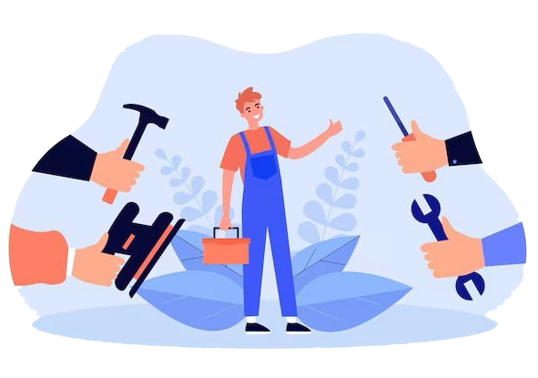

شرکت تولید و تعمیر ماشین الات صنایع سلولزی اهورا صنعت
تولید، نصب و تعمیر دستگاههای پیشرفته صنایع دستمال کاغذی، نوار و پد بهداشتی، پوشک و محصولات مشابه — کارآمد، قابلاعتماد و سازگار با استانداردهای نوین صنعتی.
درباره ما
- شرکت اهورا صنعت متعهد است که با تکیه بر دانش فنی، تجربهٔ عملی و شبکهٔ تامین، راه حل های عملی و اقتصادی برای تولیدکنندگان صنایع سلولزی فراهم آورده و تخصصیترین خدمات را در زمینهٔ تولید و تعمیر ماشینآلات صنایع سلولزی بهداشتی ارائه دهد.دو دهه تجربه موفق تکنسین های شرکت،ایشان را به گزینه ای مطمئن در این زمینه تبدیل میکند
گستره ی خدمات شرکت
- تولید تامین تعمیر خطوط کامل دستمال کاغذی (توالت، جیبی، حولهای، جعبهای)
- تولید تامین و تعمیر دستگاههای تولید نوار بهداشتی و پدهای بهداشتی.
- تعمیر ماشین الات تولید پوشک کودک و بزرگسال
- تعمیر، بازسازی و ارتقای خطوط موجود برای افزایش راندمان
- تامین قطعات یدکی و ارائهٔ خدمات پس از فروش سریع
- مشاوره در بهینهسازی مصرف انرژی، مواد اولیه و بستهبندی
;چرا ما؟
- دو دهه تجربه افزون بر دانش تخصصی
- انعطاف بالا در ارائه ی خدمات متناسب با نیاز مشتری
- پشتیبانی فنی ۲۴/۷ و تامین فوری قطعات یدکی
- تمرکز بر کیفیت، بهداشت و رعایت استانداردهای جهانی
- توانمند در اورهال ماشین الات برای کاهش هزینه و افزایش بهرهوری تولید
تماس با ما
